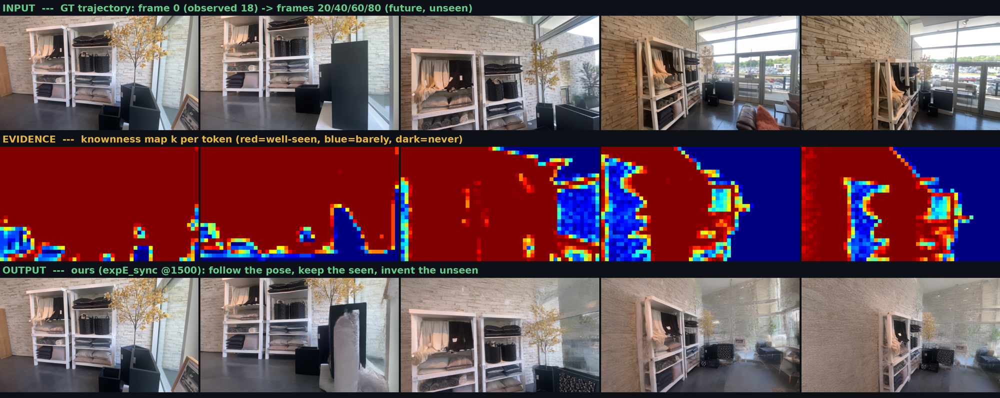
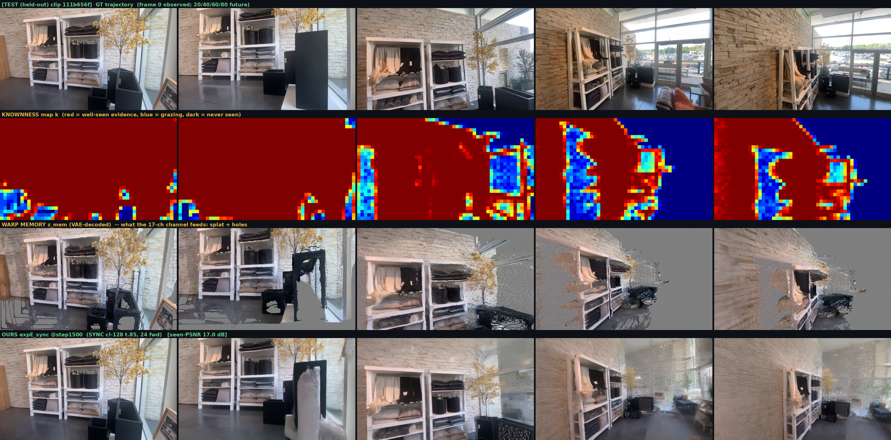
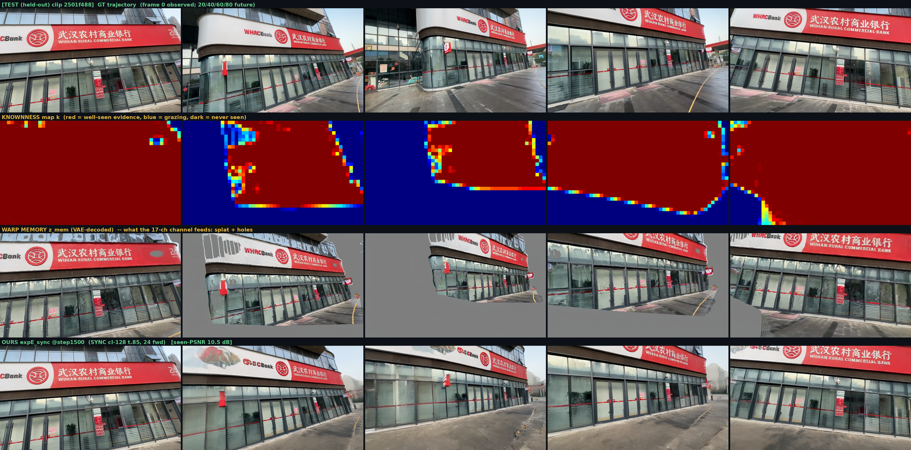

Memory-Conditioned Scene Diffusion Forcing — teaching a video diffusion model to remember the world it has seen and walk into the parts it hasn't · 2026-07-29
🎯 Goal: Show the model a short observation of a real scene (18 frames), then have it keep filming the same world along an arbitrary camera trajectory (63 future frames). Wherever the scene was observed, the output must be faithful to geometry (no drift, no re-invention); wherever it wasn't, the model must hallucinate plausibly and richly (no gray, no blur). Core methodology: content rides the channel, trust rides the noise field — each token's knownness decides its place in the denoising calendar: who commits first, who serves as reference, who is in charge of imagination. North star: leave the scene and come back, and the same world is still there (revisit consistency = true world memory).
① Input / Output
INPUT
18 observed frames (480×832 RGB, real DL3DV scenes)
Derived evidence (automatic): VGGT consistent geometry → point cloud (~2.7M) → warp splat z_mem (memory's prediction of every future frame, 16-ch VAE latent) + knownness k (per-token evidence, [21,30,52] ∈ [0,1])
OUTPUT
81-frame video (480×832): first 18 ≈ reconstruction of the observation, next 63 = forward generation along the requested poses
Constraints: seen regions aligned with GT geometry (seen-PSNR) · unseen regions carry real content energy (no gray/blur) · camera obeyed throughout
Example (held-out TEST clip). Row 1 = GT trajectory (frame 0 is observed; 20/40/60/80 are future). Row 2 = knownness evidence heatmap (red = well seen, blue = barely, dark = never seen). Row 3 = our output (expE_sync @1500).

② Capability ladder (what we are building, and where it stands)
1
Geometric fidelity — seen content appears where geometry says it should
Persistent 17-ch warp channel feeds content at every step; VGGT + Umeyama fixed shattered geometry; z_mem-anchored training teaches "clean the splat"
✅ established
2
Generative completeness — unseen regions grow rich, plausible content, never gray
P-SDEdit diagnosis: texture is synthesized in the high-noise segment → τ ≥ 0.85 + rehearsal preserves the generative prior; 4–7× the content energy of the uniform baseline
✅ established
3
Trust scheduling — knownness carries no content; it orchestrates who commits first and who references whom
SYNC synchronized-start calendar (+0.23 dB, then a further lead once training matches it); cluster-128 trust regions; expJ is testing the continuous finish-timetable
✅ core novelty
4
Pose obedience everywhere — empty regions also know where the camera is (fixes view-drift)
6-ch Plücker ray map = declarative per-token pose (expF / expF_sync); first readout showed the best deep-frame alignment in the fleet
🔥 training
5
Posterior self-correction — detect "the prior says seen, but it's wrong" and re-imagine those regions
Uncertainty head (Patch-Forcing style, +1-ch logvar; stop-grad ⇒ trainable as a frozen-backbone probe) = expI candidate
🧪 designed
6
World memory — leave and return, and the scene is consistent (multi_visit / moving_back benchmarks)
North star; revisit benchmarks are built and waiting for the champion model
⏳ north star
③ SOTA results showcase — 4 examples · 4 rows each
Row order per example: GT trajectory → knownness map k (the evidence chart) → warp memory z_mem (VAE-decoded — literally what the 17-ch channel feeds the model: splat + gray holes) → OURS (expE_sync, SYNC cl-128 τ.85, 24 forwards). Frames 0 / 20 / 40 / 60 / 80; frame 0 is observed, everything after is generated. Watch the red evidence recede into blue as the camera advances — and the output keep the seen and invent the unseen.
▶ Video comparisons (knownness map in motion): the same story as the strips below, but animated — watch the red evidence drain out of the knownness panel as the camera advances.
TEST 111b656f · signals video (GT / warp memory / knownness / output)TEST 2501f488 · signals videoTRAIN 00534f58 · knownness comparison videoTRAIN 0003dc82 · knownness comparison video
TEST (held-out) · 111b656f — seen-PSNR 17.0 dB. Deep frames: the warp memory has collapsed to holes, ours keeps shelf + brick-wall structure and invents the room beyond.

TEST (held-out) · 2501f488 — hardest clip in the dev set (10.5 dB): large unseen sweep, heavy imagination load.

TRAIN · 0003dc82 — outdoor scene, 13.5 dB; note the memory's speckle noise being cleaned up in the output.
🔍 Detail emphasis — three places this differs from most camera-conditioned video work: ① conditioning is persistent — the warp channel is injected at all 24 denoising steps, not only at initialization (this is what cured the gray-patch failure); ② the timestep is not a global scalar — the [B, L, 6, dim] per-token modulation lets all 32,760 tokens sit at different noise times simultaneously, the mechanical prerequisite for "trust = noise"; ③ the sampling calendar carries semantics — finish order = evidence order; known regions commit first and serve as references (SYNC), and expJ is currently upgrading this into a fully continuous timetable (τ = 1 − 0.2k).
fleet best 13.20 dB (4-clip avg)big TEST clip 17.1 dBonly 1500/10000 steps4× content energy vs uniform baseline24 forwards · ~70 s/clip